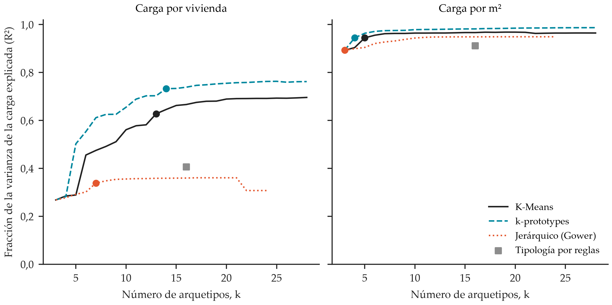
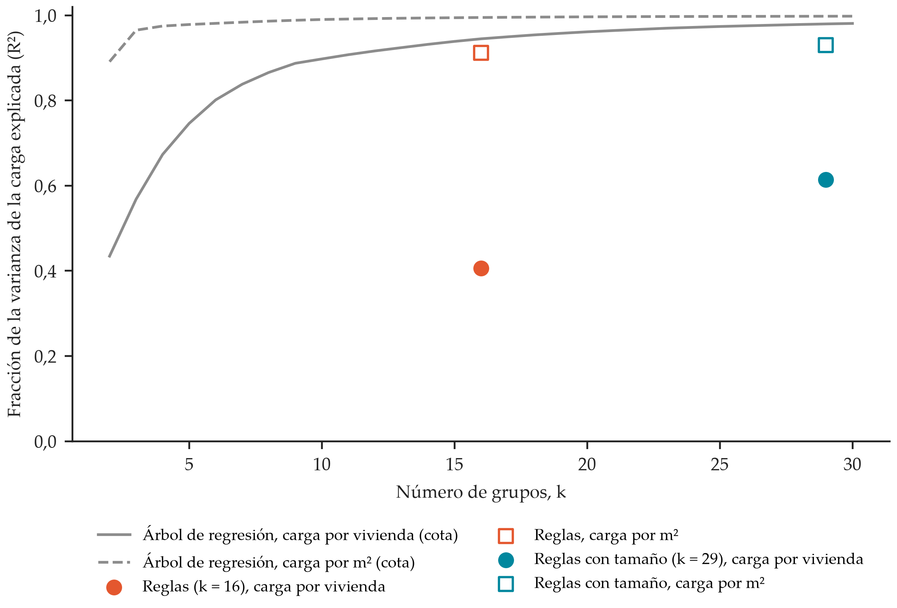
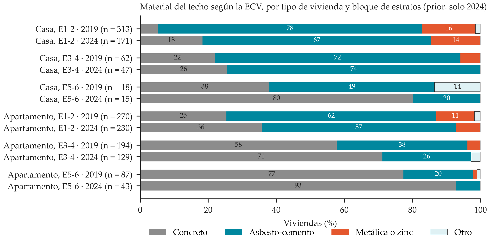
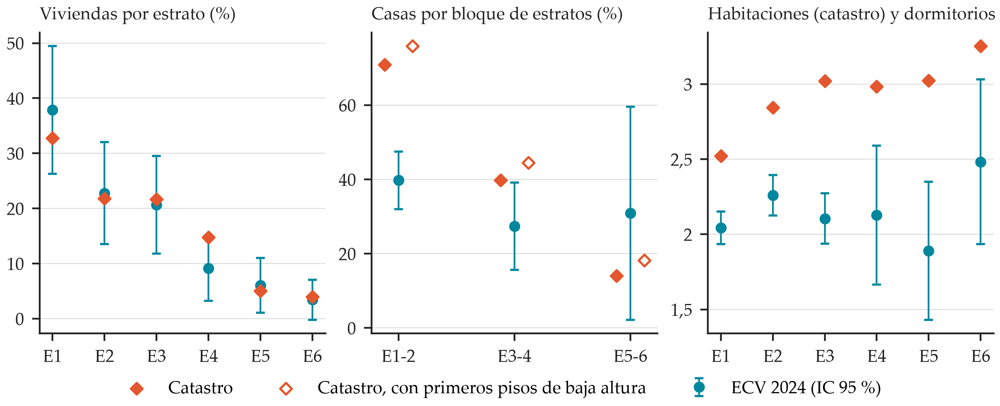

Arquetipos de vivienda (Fase 1)#
La Fase 1 de la tesis caracteriza los arquetipos de vivienda de Barranquilla a partir del catastro y asigna cada una de
las 332.718 viviendas a un arquetipo (Alcaldía de Barranquilla, Gerencia de Gestión Catastral, 2026). Cada arquetipo reúne viviendas de geometría y posición
parecidas, y por eso con un índice de carga parecido, y lleva sus priors de envolvente, sus atributos del hogar y su
ficha. Este capítulo resume
el método y los resultados; el código, el preregistro, las tablas completas y las fichas están en la carpeta
arquetipos/ del repositorio.
Nota
Estado (2 de noviembre de 2026). Los siete pasos están hechos con las dos medidas de carga del Paso 3: por vivienda, como está escrito en la propuesta (17 arquetipos), y por m² (10 arquetipos). La elección entre las dos está pendiente; mientras tanto aplica la carga por vivienda. Todos los productos existen para las dos soluciones. Una variante del agrupamiento con cuatro variables más del catastro explica menos varianza de la carga en las dos medidas y queda como análisis complementario (Tabla 18).
Datos y variables#
Cada vivienda del catastro trae su área construida, el número de pisos de la unidad, el piso en que está, el año de construcción, el uso, la condición de propiedad horizontal y el estrato. Con ellos se definen cuatro variables:
Posición frente a la cubierta: casa (suelo y techo propios), último piso (techo expuesto en un edificio) o sin cubierta (otra vivienda encima, incluido el primer piso con vivienda encima). Es la variable que más pesa en la carga, porque el techo es la principal ganancia de calor.
Tipo de edificio: baja altura (hasta 3 pisos) o multifamiliar (4 pisos o más), según el uso catastral.
Época: antes de 1990, de 1990 a 2009, y 2010 o después.
Bloque de estratos: 1-2, 3-4 y 5-6.
Método#
Paso |
Qué se hace |
Regla principal |
|---|---|---|
2. Agrupamiento |
K-Means, k-prototypes y jerárquico con distancia de Gower, ajustados en una submuestra de 10.294 edificios (una vivienda por edificio en cada posición) y aplicados después a las 332.718 viviendas |
Se agrupa por separado dentro de cada posición frente a la cubierta; DBSCAN aparta los atípicos del ajuste; el R² se calcula con todas las viviendas |
3. Número de arquetipos |
Carga anual simplificada con envolvente común |
El menor número de grupos a partir del cual ningún grupo adicional sube en 0,02 la varianza de la carga explicada (R²) |
4. Papel del estrato |
Diseño plano (por posición) frente a anidado (por posición × bloque) |
Anidado si el estrato explica al menos el 6 % de la varianza que queda dentro de los grupos |
5. Asignación |
Árbol de decisión y Random Forest que resumen la regla de asignación |
Fidelidad medida en 7 bloques de prueba de 2 km; la incertidumbre sale de repetir el agrupamiento en 100 submuestras |
6. Envolvente |
Materiales de la ECV, transmitancias de la ISO 6946 y valores de CEELA |
Priors con su incertidumbre, no valores únicos |
7. Hogar y validación |
Atributos del hogar de la ECV, representatividad y sensibilidad |
Una ficha por arquetipo |
Carga del Paso 3. Es un índice anual de carga térmica de enfriamiento: carga sensible por cubierta y muros con la temperatura sol-aire, por ventanas e infiltración, y carga latente por infiltración, con una consigna de 26,5 °C y 60 % de humedad relativa, el clima horario de ERA5-Land de 2015 a 2025 (Muñoz-Sabater et al., 2021, Zippenfeld, 2023) y la misma envolvente para todas las viviendas, de modo que las diferencias vengan de la geometría y la posición. No es la carga simulada de la Fase 2.
Agrupamiento. Los algoritmos se ajustan en una submuestra con una vivienda al azar por edificio dentro de cada posición (4.074 casas, 3.140 últimos pisos y 3.080 sin cubierta), estratificada por tipo y bloque con un mínimo de 150 edificios por estrato. Así un edificio con cientos de apartamentos no pesa más que una casa, y la distancia de Gower, que crece con el cuadrado del número de puntos, sigue siendo calculable. Después, cada una de las 332.718 viviendas se asigna al centroide, prototipo o medoide más cercano de su posición, y el R² de la carga se mide sobre todas. Las variables son el área, los pisos de la unidad y el piso del edificio (en logaritmo), la época, el tipo y la propiedad horizontal. k-prototypes maneja a la vez las variables numéricas y las categóricas (Huang, 1998), y el jerárquico usa la distancia de Gower (Gower, 1971). Para cada número total de grupos se toma la mejor combinación entre estratos, y se elige el menor a partir del cual ninguna ganancia llega a 0,02. Entre los algoritmos se queda el de mayor R² entre los estables, con los umbrales de Hennig (Hennig, 2007): Jaccard ponderado de al menos 0,75 en 100 submuestras del 80 % y ningún grupo grande por debajo de 0,6. Agrupar por propiedades del edificio y evaluar con el indicador energético es un enfoque con precedentes (Dahlström et al., 2024, De Jaeger et al., 2020).
Envolvente. El material del techo, las paredes y los pisos sale de la ECV 2024 por bloque de estratos y por casa o apartamento (DANE, 2026). Antes de juntar olas se probó con la corrección de Rao y Scott si cambiaban entre 2019 y 2024 (Rao y Scott, 1981): cambian en las casas de los estratos 1 y 2, así que se usa solo 2024. Cada material se traduce a transmitancia con la ISO 6946 (ISO, 2017), a capacidad con las clases de masa de la ISO 13790 (ISO, 2008), y las ventanas, la sombra y la zona climatizada parten de CEELA (UPME et al., 2025a, UPME et al., 2025b). La infiltración con las ventanas cerradas es lognormal (Nazaroff, 2021), con anclas medidas en clima cálido y en Brasil (Mathur y Damle, 2021, Rodrigues et al., 2021). El factor de sombra de 0,75 coincide con el de Lombardi et al. (2019).
Las dos soluciones#
Carga por vivienda |
Carga por m² |
|
|---|---|---|
Arquetipos |
17 |
10 |
Algoritmo elegido |
k-prototypes |
K-Means |
Varianza de la carga explicada (R²) |
0,66 |
0,93 |
Estabilidad (Jaccard ponderado) |
0,97 |
1,00 |
Silueta |
0,18 |
0,55 |
Árbol que resume la asignación |
79 reglas; reproduce el 99,7 % de las asignaciones |
10 reglas; reproduce el 100 % |
Qué separa, además de la posición y el bloque |
las casas de los estratos 1 a 4 por tamaño |
las casas de los estratos 1 y 2 de un piso o de dos o más |
Como referencia, la sola partición por posición y bloque de estratos (9 grupos) explica 0,40 de la varianza por vivienda y 0,91 por m², y la tipología por reglas (tipo × posición × época × bloque, 16 tipos), 0,41 y 0,91. El agrupamiento suma, entonces, 0,26 por vivienda y 0,02 por m². El estrato explica entre el 12 y el 17 % de la varianza que queda dentro de los grupos del diseño plano, por encima del umbral de 6 %, así que en las dos medidas se adoptó el diseño anidado.
La carga del Paso 3 usa la misma envolvente para todas las viviendas, así que solo depende del área, los pisos de la unidad, la altura y la posición; la época, el tipo, la propiedad horizontal y el estrato no entran en ella. Por eso el R² solo premia las divisiones por tamaño y pisos, y los arquetipos son clases geométricas: la diversidad de la envolvente entra por los priors del Paso 6, no por los arquetipos. Del mismo modo, lo que mide el estrato dentro de los grupos son diferencias de geometría entre estratos.
La diferencia entre las dos medidas tiene una causa clara: la varianza de la carga por vivienda la dominan muy pocas viviendas grandes (las de 300 m² o más son el 1,8 % de la ciudad y aportan el 37 % de la varianza), y por eso esa solución separa sobre todo tamaños. Con la carga por m², los arquetipos quedan definidos por la posición y el bloque. Qué medida conviene depende de cómo tome el área la simulación de la Fase 2, y los arquetipos deben seguir el uso que se les dé (Pasichnyi et al., 2019).


Figura 12 Varianza de la carga explicada según el número de arquetipos, en el diseño plano (agrupamiento dentro de cada posición). Los puntos marcan el número elegido para cada algoritmo; el cuadrado gris, la tipología por reglas.#


Figura 13 Cota de referencia: varianza explicada por un árbol de regresión con k hojas, frente a las tipologías por reglas.#
Arquetipos con la carga por m²#
Arquetipo |
Viviendas (% de la ciudad) |
Área mediana, m² (P25–P75) |
Carga mediana, kWh/m²·año |
Techo de concreto |
Fracción climatizada |
Infiltración, ren/h |
Hogares con A/C |
|---|---|---|---|---|---|---|---|
C12-1 |
119.465 (35,9 %) |
69 (51–96) |
522 |
18 % |
0,18 |
2,06 |
22 % |
C12-2 |
9.132 (2,7 %) |
104 (65–140) |
382 |
18 % |
0,14 |
2,08 |
26 % |
C34-1 |
48.239 (14,5 %) |
116 (85–160) |
499 |
26 % |
0,11 |
1,98 |
53 % |
C56-1 |
4.216 (1,3 %) |
213 (153–304) |
389 |
72 % |
0,90 |
1,33 |
87 % |
S12-1 |
40.889 (12,3 %) |
46 (42–56) |
236 |
no expuesto |
0,22 |
0,97 |
16 % |
S34-1 |
58.846 (17,7 %) |
68 (53–86) |
219 |
no expuesto |
0,31 |
0,96 |
64 % |
S56-1 |
22.034 (6,6 %) |
117 (84–161) |
199 |
no expuesto |
0,90 |
0,96 |
90 % |
U12-1 |
11.992 (3,6 %) |
55 (43–106) |
529 |
69 % |
0,18 |
1,40 |
21 % |
U34-1 |
14.105 (4,2 %) |
81 (62–112) |
514 |
86 % |
0,26 |
1,15 |
61 % |
U56-1 |
3.800 (1,1 %) |
126 (94–194) |
496 |
98 % |
0,90 |
0,98 |
88 % |
C12-2 agrupa las casas de estratos 1 y 2 de dos pisos o más. Las viviendas con techo expuesto (casa y último piso) tienen más del doble de carga por m² que las que tienen otra vivienda encima.
Arquetipos con la carga por vivienda#
Arquetipo |
Posición |
Estratos |
Viviendas (% de la ciudad) |
Área mediana, m² (P25–P75) |
Pisos de la unidad |
Carga mediana, MWh/año |
|---|---|---|---|---|---|---|
C12-1 |
Casa |
1-2 |
31.446 (9,4 %) |
39 (31–46) |
1 |
21,6 |
C12-2 |
Casa |
1-2 |
52.772 (15,9 %) |
68 (60–77) |
1 |
35,6 |
C12-3 |
Casa |
1-2 |
9.132 (2,7 %) |
104 (65–140) |
2 |
39,8 |
C12-4 |
Casa |
1-2 |
35.247 (10,6 %) |
116 (100–143) |
1 |
58,4 |
C34-1 |
Casa |
3-4 |
7.859 (2,4 %) |
56 (43–67) |
1 |
29,8 |
C34-2 |
Casa |
3-4 |
10.725 (3,2 %) |
95 (85–108) |
1 |
48,4 |
C34-3 |
Casa |
3-4 |
6.419 (1,9 %) |
105 (87–131) |
2 |
39,8 |
C34-4 |
Casa |
3-4 |
14.936 (4,5 %) |
139 (120–157) |
1 |
69,1 |
C34-5 |
Casa |
3-4 |
6.288 (1,9 %) |
224 (198–277) |
1 |
108,6 |
C34-6 |
Casa |
3-4 |
2.012 (0,6 %) |
280 (231–353) |
2 |
95,8 |
C56-1 |
Casa |
5-6 |
4.216 (1,3 %) |
213 (153–304) |
2 |
91,0 |
S12-1 |
Sin cubierta |
1-2 |
40.889 (12,3 %) |
46 (42–56) |
1 |
10,8 |
S34-1 |
Sin cubierta |
3-4 |
58.846 (17,7 %) |
68 (53–86) |
1 |
14,9 |
S56-1 |
Sin cubierta |
5-6 |
22.034 (6,6 %) |
117 (84–161) |
1 |
23,4 |
U12-1 |
Último piso |
1-2 |
11.992 (3,6 %) |
55 (43–106) |
1 |
28,8 |
U34-1 |
Último piso |
3-4 |
14.105 (4,2 %) |
81 (62–112) |
1 |
39,9 |
U56-1 |
Último piso |
5-6 |
3.800 (1,1 %) |
126 (94–194) |
1 |
59,2 |
Variante con más variables del catastro#
Además de las seis variables de la propuesta, el catastro trae el número de habitaciones y de baños, el área del terreno y la condición de vivienda de interés social o prioritario. Se repitió el agrupamiento completo con esas cuatro variables agregadas (las tres primeras en logaritmo), con la misma submuestra y las mismas reglas. La regla que descarta las variables casi constantes deja la condición de VIS o VIP solo en las viviendas sin cubierta y de último piso de los estratos 1 y 2: en los demás estratos, menos del 1 % de los edificios de la submuestra son VIS o VIP. La destinación y el tipo de planta son constantes, la altura de piso vale 3,0 m en el 99,7 % de las viviendas, y la ubicación queda fuera porque el arquetipo describe la vivienda y no su lugar. La regla para elegir entre las dos variantes se fijó antes de correr la nueva: entre las soluciones estables, la de mayor R² de la carga; con un empate de menos de 0,02, la de menos grupos.
Carga |
Variables |
Algoritmo |
Arquetipos |
Grupos de casas |
R² |
Jaccard ponderado |
Silueta |
Concordancia |
|---|---|---|---|---|---|---|---|---|
Por vivienda |
Seis (final) |
k-prototypes |
17 |
4, 6 y 1 |
0,66 |
0,97 |
0,18 |
|
Por vivienda |
Diez |
K-Means |
12 |
2, 2 y 2 |
0,53 |
0,98 |
0,24 |
0,67 |
Por m² |
Seis (final) |
K-Means |
10 |
2, 1 y 1 |
0,93 |
1,00 |
0,55 |
|
Por m² |
Diez |
K-Means |
9 |
1, 1 y 1 |
0,91 |
1,00 |
no definida |
0,94 |
Las dos variantes son estables y la de seis variables explica más varianza en las dos medidas, así que sigue siendo la solución final y los arquetipos no cambian. La carga del Paso 3 depende solo de la geometría (área y pisos) y de la posición, y las variables agregadas no entran en ella. Con diez variables la distancia reparte su peso entre ellas: por vivienda, las casas de cada bloque se dividen solo en pequeñas y grandes, y ningún grupo adicional sube el R² en 0,02; por m², las casas de los estratos 1 y 2 de dos pisos o más ya no se separan de las de un piso. Con este criterio, una variable que no entra en la carga no puede subir el R², así que el resultado no dice si las habitaciones o los baños importan para la ocupación o los equipos de la Fase 2.
Priors de envolvente#
El techo pesa sobre todo en las casas de los estratos 1 a 4, donde predomina el asbesto-cemento (Figura 14). En el último piso de los multifamiliares el techo se toma como losa de concreto, y en los de baja altura, con el reparto de los apartamentos de la ECV.


Figura 14 Material del techo según la ECV 2019 y 2024, por tipo de vivienda y bloque de estratos. El prior usa solo la ola 2024.#
Techo |
Mínimo |
Moda |
Máximo |
CEELA |
|---|---|---|---|---|
Concreto |
3,33 |
3,51 |
4,88 |
3,6 |
Asbesto-cemento |
2,07 |
4,50 |
6,58 |
6,6 |
Metálica o zinc |
2,13 |
4,76 |
7,14 |
|
Otro |
2,06 |
4,44 |
6,45 |
Los muros de mampostería van de 1,9 a 4,1 W/m²K, el rango de los edificios de CEELA. La infiltración con las ventanas
cerradas tiene una mediana de 0,9 renovaciones por hora (de 0,5 a 1,6) en la construcción con losa encima y de 2,0 (de
0,8 a 5,0) en la de techo liviano o paredes de otro material. El color de los techos, la relación ventana-muro ampliada
para la vivienda antigua e informal, la sombra y el área de una habitación son supuestos con rango: el análisis de
Morris de la Fase 2 dirá cuáles importan. La tabla completa, con la fuente de cada valor, está en
env_priors_por_vivienda.csv
y env_priors_por_m2.csv.
Validación#


Figura 15 Catastro frente a la ECV 2024: viviendas por estrato, fracción de casas por bloque y habitaciones (catastro) frente a dormitorios (ECV), con el intervalo del 95 % de la ECV.#
Viviendas por estrato: las seis cifras del catastro caen dentro del intervalo de la ECV.
Fracción de casas: el catastro tiene 71 % de casas en los estratos 1 y 2 y la ECV, 40 %; en 3 y 4, 40 % frente a 27 %. Muchas viviendas que el catastro registra como casa se declaran apartamento en la ECV, así que el puente entre la posición y el tipo de vivienda de la ECV es aproximado. La sensibilidad de la Fase 2 lo trata como un factor: hasta el 44 % de las casas de los estratos 1-2 y el 31 % de las de 3-4 pueden tomar los materiales de los apartamentos.
Habitaciones: el catastro da entre 0,5 y 1,1 habitaciones más que los dormitorios de la ECV en todos los estratos. Por eso, la fracción climatizada de los apartamentos de 3-4, que según CEELA climatizan «las habitaciones», usa el número del catastro llevado a los dormitorios de la ECV.
Sensibilidad a las variables: al repetir el agrupamiento sin cada variable, el área resulta imprescindible en la solución por vivienda (sin ella no se forman los grupos de casas de 3-4), y el número de pisos de la unidad define la solución por m². Los arquetipos con un solo grupo en su posición y bloque no dependen de las variables de agrupamiento.
Asignación: el árbol reproduce la regla de asignación en el 99,7 % de las viviendas en la solución por vivienda y en el 100 % en la de por m². No es una prueba de generalización, porque el arquetipo es función de los mismos atributos. La incertidumbre que pasa a la Fase 2 sale de repetir el agrupamiento en las 100 submuestras de la prueba de estabilidad. En la solución por m², cada vivienda cae siempre en su arquetipo. En la solución por vivienda, los arquetipos de casas de los estratos 1-2 quedan por encima de 0,98 y la incertidumbre se concentra en las casas de 3-4: las de C34-6 (casas grandes de dos pisos) caen en él el 64 % de las veces y si no, en C34-3, y las de C34-2 y C34-4, el 86 % y el 85 %.
Limitaciones#
La ECV no permite ubicar a sus hogares en los arquetipos (no trae área ni pisos). Los materiales y los atributos del hogar se asignan por bloque de estratos y por casa o apartamento, de modo que los arquetipos de una misma posición y bloque comparten esos priors.
Las casas de los estratos 5 y 6 tienen solo 15 viviendas en la ECV 2024, así que su prior de materiales es muy incierto.
No hay mediciones de infiltración ni del color de los techos en Barranquilla; los dos son supuestos con rango.
El año de construcción del catastro se usa como época, aunque su significado no está documentado.
Usar solo la ola 2024 de la ECV depende de suponer para 2019 un efecto de diseño de 1,5; con el de cada material la prueba del techo no rechaza. Con las dos olas, el techo de concreto de las casas de los estratos 1 y 2 baja de 18 % a 10 %, así que la elección de olas entra como factor en la sensibilidad de la Fase 2.
Algunas reglas cambiaron después de ver resultados de prueba o completos (preregistro, Notas 3 a 6). Cada cambio está registrado con su motivo, y el resultado con la regla original se reporta aparte: con la regla original de elección del algoritmo habría 9 arquetipos por vivienda, con un R² de 0,40.
Archivos#
Todo está en la carpeta arquetipos/:
el preregistro y el registro de ajustes frente a la propuesta, los scripts 01 a 10, las tablas agregadas, las figuras,
las fichas de los arquetipos de cada solución (salidas/fichas/) y los árboles de asignación (salidas/modelos/). La
asignación de cada vivienda a su arquetipo y las cargas por vivienda no se publican.